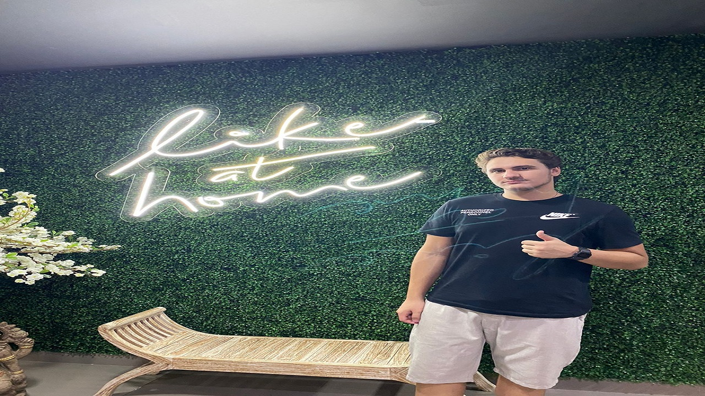

Luigi Siquiera Capoia
Olá meu nome é Luigi Siqueira Capoia e esse é o meu site pessoal, nesse site eu desenvolverei minhas técnicas de HTML, CSS e Javascript. Vou deixar logo abaixo algumas fotos minhas e ao lado os meus principais contatos. Além de meu currículo caso queiram dar uma olhada.
Alguamas fotos minhas:

Um pouco mais sobre mim:
Gosto de jogar, escutar música, ver coisas sobre astrologia, coisas relacionadas a flora e faunado planeta e estudar outras culturas.
Além disso adoro fazer um teres e um churasco.
Aqui o meu curriculo caso queiram olhar
clique aqui